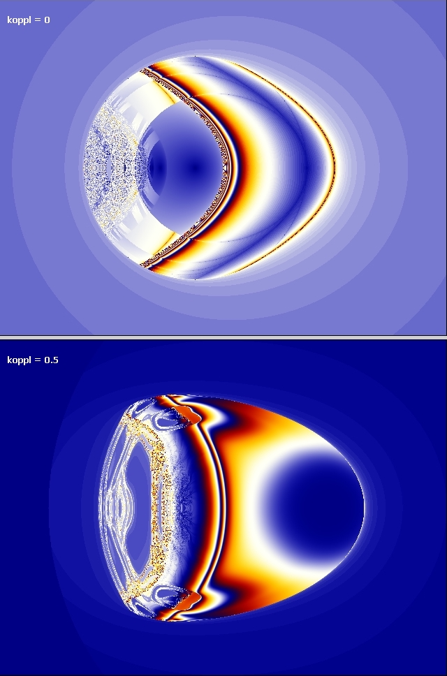
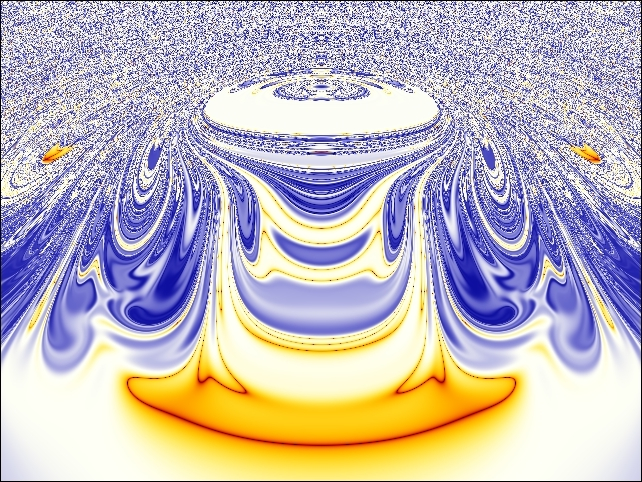
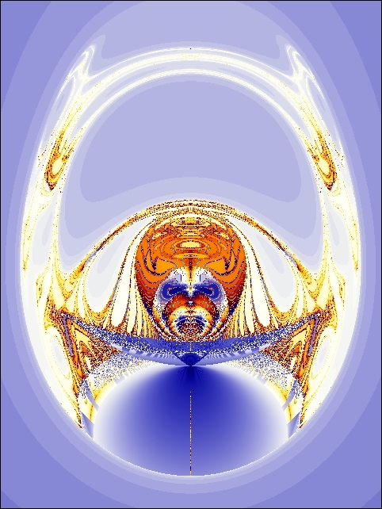
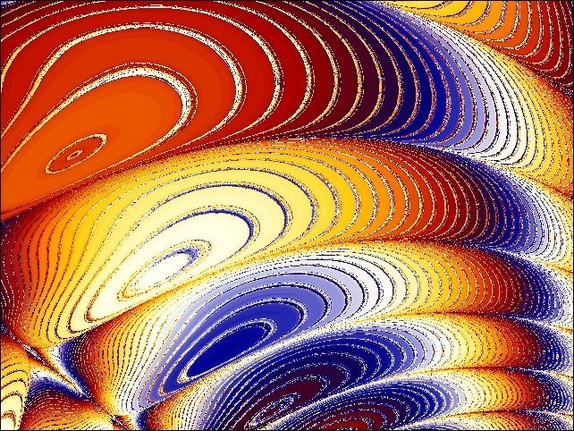
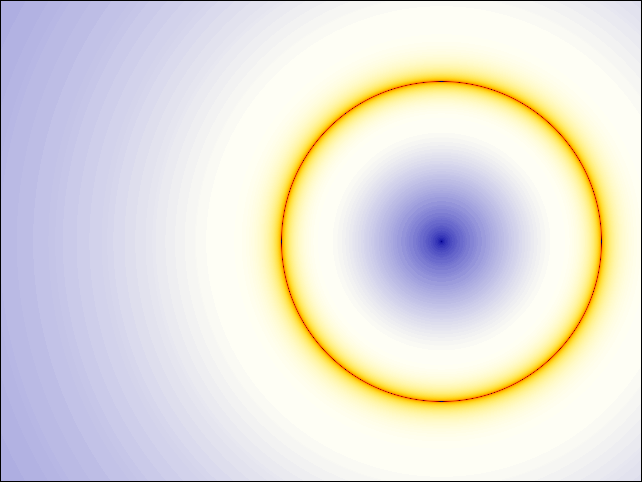
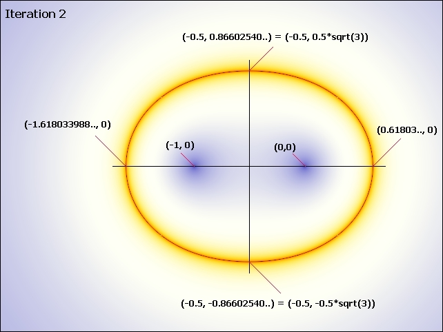
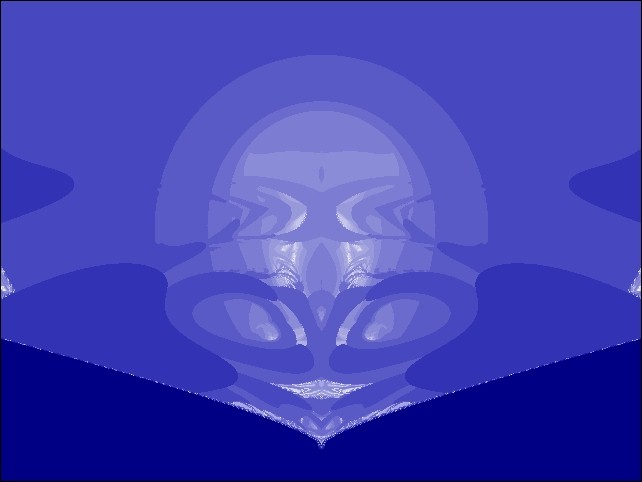

Mandelbrot abgewandelt
Auge
Z = Z * (Z*) + C
mit
Z
= x + iy (normal-Komplex)
Z* = x - iy
(konjugiert-Komplex)
und dem Zwillingsverfahren
Koppelfaktor 0.0 (ohne Zwillingsverfahren)


koppl=0.5, Detail aus dem Zentrum, Bild 90 Grad gedreht

koppl = 1.0, Bild 90 Grad gedreht

koppl = 1.0, Detail, Bild gedreht
( Z(0)=0; Iterationen 1 und 2 sind identisch beim Apfelmännchen)


Die
Linie zeigt die Grenze zwischen Divergenz und Nicht-Divergenz.
Wie man sieht,
spielt auch hier der Goldene Schnitt eine Rolle. Auch Halbachse sqrt3 ist bemerkenswert.
Später
wird die linke Seite zum "Oben" des Torkado - die Quellenströmung
kommt von Minus Realteil.
Benoit
Mandelbrot, der Entdecker des Apfelmännchens, ist an der Realität vorbeigegangen,
indem er Z*Z statt Z*ZS gerechnet hat. Z*Z quadriert eine (komplexe) physikalische
Größe, aber Z*ZS erhält wieder eine eindimensionale Zahl (Betragsquadrat). Damit
hebt sich jedesmal der Imaginärteil auf. Man kann davon ausgehen, dass so etwas
ähnlich in der Natur vorkommt. Die konjugiert-komplexe Zahl ZS könnte die phasengespiegelte
entgegenlaufende Welle sein, bzw. der Gegenwirbel (entgegendrehend, gleiche Winkelgeschwindigkeit),
wenn man die Komplexe Zahl (Zeigerstellung; Länge für Amplitude, Winkel
für Frequenz) als transversale Schwingung sieht. Beide Operationen, (Multipl.=Quadrierung
des Betrages, Addition der Drehung zu Null im Frequenzraum) plus Input C (konstante
Absorption, Antrieb) müssen zusammenwirken. Wir sehen hier nur die Projektion
in eine Ebene. Bei jeder Iteration wird ein neues Teilchenen-Antiteilchen-Paar
anihiliert (ZZ*) und neu erzeugt (Addition=Absorption/Emission) - sofern ein Zyklus
entsteht. (Man kann den Gesamtvorgang (Zyklus) auch als nichtlineare Stehende
Welle deuten. Teilchen haben eine Außenwirkung, Bildpunkte bisher nicht.)
Die Zerlegung muss zur Erzeugung passen, dann bleibt der Zyklus stabil. Das Teilchen-Antiteilchen-Paar
hat verschiedene Erscheinungsformen, während es den Zeit-Zyklus durchläuft
(ähnlich wie Metamorphose bei Insekten, oder allgemein Inkarnationen bei
Lebewesen). Die Zyklus-Länge definiert den 'Zeitraum' aus einzelnen Zeitquanten
(Iterationen). Diese Bilder
wurden mit der Ultra Fractal - Software (www.ultrafractal.com)
gerechnet. Genau wie dieses Bild:  Bild 90 Grad gedreht weitere Bild1 Bild2(andereCodierung) Bild3(andereCodierung) (Quelltext für Schädel, nutzbar in UltraFractal) Ich halte es für das UrBild eines Schädels, und es hat mich inspiriert, die konjugiert Komplexe Zahl auch bei der Mandelbrotmenge anzuwenden. Es wird mit der einfachen Formel Z = Z ^(Z*) + C (mit
C = (-1,0) und dem Zwillingsverfahren, hier Koppelfaktor 0.01;)
hergestellt
(genaueres und den (alten) Film siehe hier, unten ). ____________________________________ Hier
sind noch Scripte um Nachrechen der einzelnen Iterationen für ausgewählte
Punkte: Zum
Schädel in Nähe der Null (genannt Spinne): Zum
Schädel (leider wenig brauchbar, wegen zu kurzer Fließkommazahlen in
JavaScript) ____________________________________
Gabi Müller letzte Änderung 13.06.09 |
{kind=link}
{kind=link}
{kind=link}
{kind=link}
{kind=link}
{kind=link}